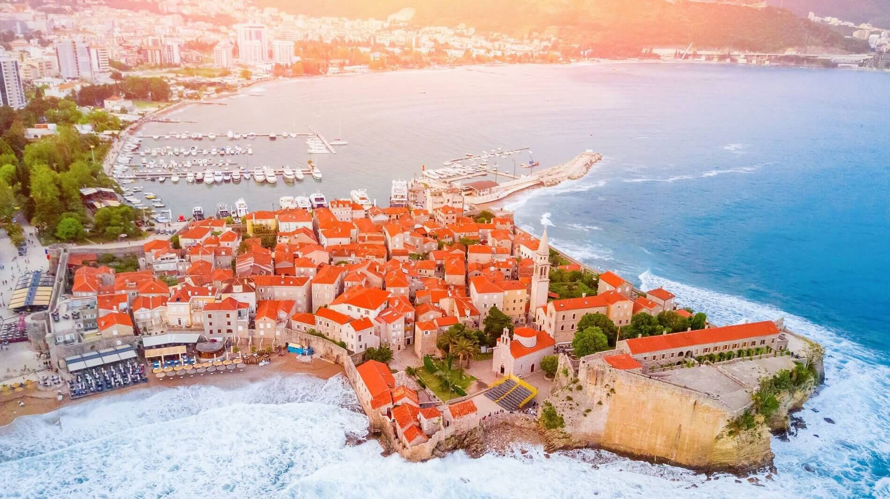

| 1 |
Bar
|
Južna regija |
13.798 |
- Stari Bar
- Dvorac kralja Nikole
- Stara Barska maslina
|

|
| 2 |
Berane
|
Sjeverna regija |
11.073 |
- Spomenik slobode na Jasikovcu
- Manastir Đurđevi Stupovi
- Polimski arheološki muzej
|
|
| 3 |
Budva
|
Južna regija |
13.338 |
- Stari grad Budva
- Citadela
- Crkva Santa Maria in Punta
|
 |
| 4 |
Gusinje
|
Sjeverna regija |
1.673 |
- Ali-Pasini izvori
- Vezirova đžamija
- Crkva Svetog Đorđa
|
|
| 5 |
Žabljak
|
Sjeverna regija |
1.420 |
- Nacionalni park Durmitor
- Kanjoj rijeke Tare
- Vražje jezero
|
|
| 6 |
Kotor
|
Južna regija |
961 |
- Pomorski muzej
- Katedrala Svetog Tripun
- Palata Prima
|
|
| 7 |
Nikšić
|
Centralna regija |
56.970 |
- Tvrđava Bedem
- Dvorac Kralja Nikole
- Jezero Krupac
|
|
| 8 |
Perast |
Južna regija |
349 |
- Gospa od Škrpjela
- Palata Smekja
- Katolička crkva Svetog Nikole
|
|
| 9 |
Plav |
Sjeverna regija |
3.717 |
- Nacionalni park Prokletije
- Kula Ređepagića
- Plavsko jezero
|
|
| 10 |
Podgorica
|
Centralna regija |
150.997 |
- Spomenik Partizanu-borcu na Gorici
- Sastavci
- Duklja
|
|
| 11 |
Tivat |
Južna regija |
9.367 |
- Ostrvo Cvijeća
- Porto Montenegro
- Bjelila-ribarsko selo
|
|